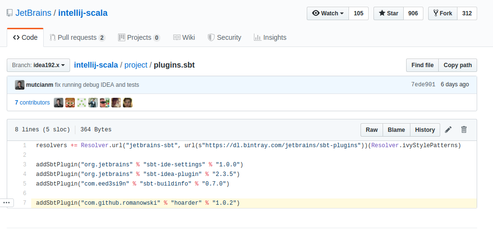
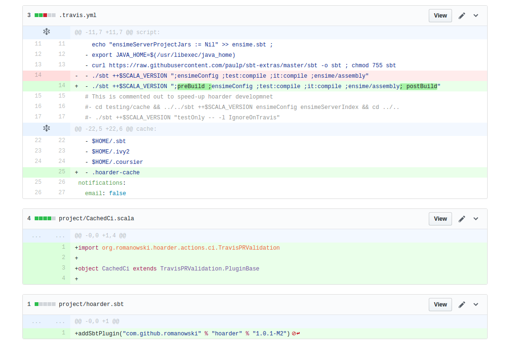

<!doctype html>
<html lang="en">

<head>
	<meta charset="utf-8">

	<title>DRY compiling!</title>
	<meta name="description" content="Use hoarder to reuse compiled code!">

	<meta name="author" content="Krzysztof Romanowski">
	<meta name="apple-mobile-web-app-capable" content="yes"/>
	<meta name="apple-mobile-web-app-status-bar-style" content="black-translucent"/>

	<meta name="viewport"
	      content="width=device-width, initial-scale=1.0, maximum-scale=1.0, user-scalable=no, minimal-ui">

	<style type="text/css">
		.lefty {
		text-align: left;
		font-size: 65% !important;
		margin-left: 5%  !important;
		}

		.reveal a {
      color: #dcdcdc !important;
    }

    .reveal pre code {
			background: #244194 !important;
    }

		.small-code {
			margin-top: -50px !important;
		}

		.reveal .small-code  pre {
			margin: 0px !important;
			width: 100% !important;
		}

		.reveal .small-code pre code {
			max-height: 750px !important;
			top: 1px !important;
			width: 100% !important;
		}

		section {
			padding-right: 110px !important;
		}

	</style>

	<link rel="stylesheet" href="css/reveal.css">
	<link rel="stylesheet" href="css/theme/solarized.css" id="theme">

	<!-- Code syntax highlighting -->
	<link rel="stylesheet" href="lib/css/zenburn.css">

	<!-- Printing and PDF exports -->
	<script>
			var link = document.createElement( 'link' );
			link.rel = 'stylesheet';
			link.type = 'text/css';
			link.href = window.location.search.match( /print-pdf/gi ) ? 'css/print/pdf.css' : 'css/print/paper.css';
			document.getElementsByTagName( 'head' )[0].appendChild( link );


	</script>

	<!--[if lt IE 9]>
	<script src="lib/js/html5shiv.js"></script>
	<![endif]-->
</head>

<body style="background-image: url('imgs/bg2.jpg');">


<div class="reveal">

	<!-- Any section element inside of this container is displayed as a slide -->
	<div class="slides" >

		<section data-markdown data-background-image>
			<script type="text/template">
				<br>
				<br>
				<br>

				# Hoarder

				Caching your builds for fun and profit

				Krzysztof Romanowski

				<br>
				<br>


				
			</script>
		</section>

		<section data-markdown data-background-image style="z-index: 100">
			<script type="text/template">
				## Krzysztof Romanowski


				romanowski.kr@gmail.com

				<div style="margin-left: 36% text-align: left;">
					 romanowski
					<br/>
					 RomanowskiKr

				</div>

				
			</script>
		</section>

		<section data-markdown data-background-image>
			<script type="text/template">
				Codebase I am working with:

				* monorepo
				* big Scala project: 2 MLoC
				* over 200 devs
				* over 30 PR/day merged to main branch
				* compilation time over 40 min on powerful machines
			</script>
		</section>

		<!-- ################################################################################################################ -->

		<section>
			<section data-markdown data-background-image>
				<script type="text/template">
					## Quick look at the slow compiler
				</script>
			</section>

			<section data-markdown data-background-image>
				<script type="text/template">
					### My build usually takes

					(incremental one)

					|  | |
					| -- | -- |
					| ~10&nbsp;sec | wait, not&nbsp;a&nbsp;problem |
					| ~minute |  wait, but&nbsp;rather&nbsp;not |
					| ~5&nbsp;minutes | reply to an mail, talk&nbsp;on&nbsp;slack |
					| ~15&nbsp;minutes | go for coffee, do&nbsp;a&nbsp;review |

				</script>
			</section>

			<section data-markdown data-background-image>
				<script type="text/template">
					| project | 'cold' | 'warm'
					| -- | -- | -- |
					| ensime-server | 21s | 12s
					| scala-debugger | 30s | 24s |
					| akka | 19s | 11s |

					
					[twitter.com/li_haoyi/status/742689412308467712](https://twitter.com/li_haoyi/status/742689412308467712)
				</script>
			</section>

			<section data-markdown data-background-image>
				<script type="text/template">
					## Keep your jvm (sbt) hot!
				</script>
			</section>

			<section data-markdown data-background-image>
				<script type="text/template">
					## My full build usually takes

					|  | |
					| -- | -- |
					| ~10&nbsp;sec | wait, not&nbsp;a&nbsp;problem |
					| ~minute |  wait, but&nbsp;rather&nbsp;not |
					| ~5&nbsp;minutes | reply on mail, talk&nbsp;on&nbsp;slack |
					| ~15&nbsp;minutes | go for coffee, do&nbsp;a&nbsp;review |

					(there are Scala projects that compile ~hour)
				</script>
			</section>

			<section data-markdown data-background-image>
				<script type="text/template">
					| project | time |
					| -- | -- | -- |
					| ensime-server | 161s |
					| scala-debugger | 294s |
					| akka | 316s |

					
				</script>
			</section>

			<section data-markdown>
				<script type="text/template">
					## Can we do better?
				</script>
			</section>


		</section>
		<!-- ################################################################################################################ -->

		<section>
			<section data-markdown data-background-image>
				<script type="text/template">
					# Meet Hoarder
				</script>
			</section>

			<section data-markdown data-background-image>
				<script type="text/template">
					###...not Hodor

					
				</script>
			</section>

			<section data-markdown data-background-image>
				<script type="text/template">
					### Hoarder

					
				</script>
			</section>

			<section data-markdown data-background-image>
				<script type="text/template">
					### Hoarder

					The sbt plugin around for caching compilation results.
					<br>
					<br>

					```scala
					// In your project/plugins.sbt or ~/.sbt/plugins.sbt
					addSbtPlugin("com.github.romanowski" % "hoarder" % "1.0.0-M2")
					```
					<br>
					[romanowski.github.io/hoarder](romanowski.github.io/hoarder)
				</script>
			</section>

			<section data-markdown data-background-image>
				<script type="text/template">
					## How does it work?

					Compilation is mimicked.

					* Old classes are cleaned from output directories
					* Classes from cache are extracted to output directories
					* Metadata is transformed to workspace specific form
					* Transformed metadata is saved to local sbt stores (AnalysisStore)
				</script>
			</section>

			<section data-markdown data-background-image>
				<script type="text/template">
					#### Why is
					### *cache + incremental compilation*
					#### so powerful?

					<br>

					* Incremental compiler validate cache entry
					* We don't need a direct hit - we just want to be close
					* We can use partial cache (since everything not present in cache get recompiled)
				</script>
			</section>

			<section data-markdown data-background-image>
				<script type="text/template">
					## Cache
					## =
					### Metadata (zinc Analysis)
					### +
					### Binaries (classfileS)
				</script>
			</section>

			<section data-markdown data-background-image>
				<script type="text/template">
					# Metadata
					## (zinc Analysis)

					* describes state of workspace during last compilation
					* describes relation between sources
					* describes sources->libraries dependencies
				</script>
			</section>

			<section data-markdown data-background-image>
				<script type="text/template">
				How to find one?

				```
				show incCompileSetup
				[info] hoarder/compile:incCompileSetup
				[info] IncSetup(<function1>, <function1>, false,
				<path-to-metadatafile>,sbt.compiler.CompilerCache, ...
				```

				Usually

				```
				target/streams/compile/incCompileSetup/$global/streams/inc_compile

				streams.in(compileIncSetup).value.cacheDirectory /
				compileAnalysisFilename.value
				```
				</script>
			</section>

			<section data-markdown class="small-code"  >
				<script type="text/template" style="max-height: 750px">
					``` scala
					format version: 5
					output mode:
					1 items
					0 -> single
					output directories:
					1 items
					output dir -> /tmp/sbt_bacc976d/simpleTest/target/scala-2.11/classes
					compile options:
					0 items
					javac options:
					0 items
					compiler version:
					1 items
					0 -> 2.11.8
					compile order:
					1 items
					0 -> Mixed
					name hashing:
					1 items
					0 -> true
					products:
					4 items
					/tmp/sbt_bacc976d/simpleTest/src/main/scala/Test.scala -> /tmp/sbt_bacc976d/simpleTest/target/scala-2.11/classes/MyApp$.class
					/tmp/sbt_bacc976d/simpleTest/src/main/scala/Test.scala -> /tmp/sbt_bacc976d/simpleTest/target/scala-2.11/classes/MyApp$delayedInit$body.class
					/tmp/sbt_bacc976d/simpleTest/src/main/scala/Test.scala -> /tmp/sbt_bacc976d/simpleTest/target/scala-2.11/classes/MyApp.class
					/tmp/sbt_bacc976d/simpleTest/src/main/scala/Test.scala -> /tmp/sbt_bacc976d/simpleTest/target/scala-2.11/classes/Test.class
					binary dependencies:
					2 items
					/tmp/sbt_bacc976d/simpleTest/src/main/scala/Test.scala -> /home/krzysiek/.coursier/cache/v1/https/repo1.maven.org/maven2/org/scala-lang/scala-library/2.11.8/scala-library-2.11.8.jar
					/tmp/sbt_bacc976d/simpleTest/src/main/scala/Test.scala -> /usr/lib/jvm/java-8-oracle/jre/lib/rt.jar
					direct source dependencies:
					0 items
					direct external dependencies:
					0 items
					public inherited source dependencies:
					0 items
					public inherited external dependencies:
					0 items
					member reference internal dependencies:
					0 items
					member reference external dependencies:
					0 items
					inheritance internal dependencies:
					0 items
					inheritance external dependencies:
					0 items
					class names:
					4 items
					/tmp/sbt_bacc976d/simpleTest/src/main/scala/Test.scala -> MyApp
					/tmp/sbt_bacc976d/simpleTest/src/main/scala/Test.scala -> MyApp$
					/tmp/sbt_bacc976d/simpleTest/src/main/scala/Test.scala -> MyApp$delayedInit$body
					/tmp/sbt_bacc976d/simpleTest/src/main/scala/Test.scala -> Test
					used names:
					11 items
					/tmp/sbt_bacc976d/simpleTest/src/main/scala/Test.scala ->
					<init>
						/tmp/sbt_bacc976d/simpleTest/src/main/scala/Test.scala -> Any
						/tmp/sbt_bacc976d/simpleTest/src/main/scala/Test.scala -> AnyRef
						/tmp/sbt_bacc976d/simpleTest/src/main/scala/Test.scala -> App
						/tmp/sbt_bacc976d/simpleTest/src/main/scala/Test.scala -> MyApp
						/tmp/sbt_bacc976d/simpleTest/src/main/scala/Test.scala -> Object
						/tmp/sbt_bacc976d/simpleTest/src/main/scala/Test.scala -> Predef
						/tmp/sbt_bacc976d/simpleTest/src/main/scala/Test.scala -> Test
						/tmp/sbt_bacc976d/simpleTest/src/main/scala/Test.scala -> Unit
						/tmp/sbt_bacc976d/simpleTest/src/main/scala/Test.scala -> println
						/tmp/sbt_bacc976d/simpleTest/src/main/scala/Test.scala -> scala
						product stamps:
						4 items
						/tmp/sbt_bacc976d/simpleTest/target/scala-2.11/classes/MyApp$.class -> lastModified(1488184104000)
						/tmp/sbt_bacc976d/simpleTest/target/scala-2.11/classes/MyApp$delayedInit$body.class ->
						lastModified(1488184104000)
						/tmp/sbt_bacc976d/simpleTest/target/scala-2.11/classes/MyApp.class -> lastModified(1488184104000)
						/tmp/sbt_bacc976d/simpleTest/target/scala-2.11/classes/Test.class -> lastModified(1488184104000)
						source stamps:
						1 items
						/tmp/sbt_bacc976d/simpleTest/src/main/scala/Test.scala -> hash(ea2b0498f9658bad363422af637ce9504f974535)
						binary stamps:
						2 items
						/home/krzysiek/.coursier/cache/v1/https/repo1.maven.org/maven2/org/scala-lang/scala-library/2.11.8/scala-library-2.11.8.jar
						-> lastModified(1457105192000)
						/usr/lib/jvm/java-8-oracle/jre/lib/rt.jar -> lastModified(1487270216000)
						class names:
						2 items
						/home/krzysiek/.coursier/cache/v1/https/repo1.maven.org/maven2/org/scala-lang/scala-library/2.11.8/scala-library-2.11.8.jar
						-> scala.App
						/usr/lib/jvm/java-8-oracle/jre/lib/rt.jar -> java.lang.Object
						internal apis:
						1 items
						/tmp/sbt_bacc976d/simpleTest/src/main/scala/Test.scala ->
						rO0ABXNyABB4c2...
						external apis:
						0 items
						source infos:
						1 items
						/tmp/sbt_bacc976d/simpleTest/src/main/scala/Test.scala ->
						AAAAAAAAAAA=
						compilations:
						1 items
						0 ->
						rO0ABXNyABV4c2J0aS5hcGkuQ29tcGlsYXRpb27t...
						```
				</script>
			</section>

			<section data-markdown data-background-image>
				<script type="text/template">
					### Metadata (zinc Analysis)
					### is workspace specific

					* absoute path
					* machine-specific paths to ivy-caches
					* different output locations
					* different line endings
					* differnt location of JDK
				</script>
			</section>

			<section data-markdown data-background-image>
				<script type="text/template">
					```scala
					trait AnalysisMappers {
						val outputDirMapper: Mapper[File] = Mapper.forFile
						val sourceDirMapper: Mapper[File] = Mapper.forFile
						val scalacOptions: Mapper[String] = Mapper.forString

						val sourceMapper: Mapper[File] = Mapper.forFile
						val productMapper: Mapper[File] = Mapper.forFile
						val binaryMapper: Mapper[File] = Mapper.forFile

						type StampMapper = ContextAwareMapper[File, Stamp]
						val binaryStampMapper: StampMapper  = Mapper.forStamp
						val productStampMapper: StampMapper = Mapper.forStamp
						val sourceStampMapper: StampMapper = Mapper.forStamp
					}
					```
				</script>
			</section>


			<section data-markdown class="small-code">
				<script type="text/template">
					``` scala
					products:
					1 items
					#2#MyTestClass.scala -> ##MyTestClass.class
					binary dependencies:
					1 items
					#2#MyTestClass.scala -> /usr/lib/jvm/java-8-oracle/jre/lib/rt.jar
					direct source dependencies: 0 items
					direct external dependencies: 0 items
					public inherited source dependencies: 0 items
					public inherited external dependencies: 0 items
					member reference internal dependencies: 0 items
					member reference external dependencies: 0 items
					inheritance internal dependencies: 0 items
					inheritance external dependencies: 0 items
					class names: 1 items
					#2#MyTestClass.scala -> MyTestClass
					used names: 5 items
					#2#MyTestClass.scala ->
					<init>
						#2#MyTestClass.scala -> AnyRef
						#2#MyTestClass.scala -> MyTestClass
						#2#MyTestClass.scala -> Object
						#2#MyTestClass.scala -> scala
						product stamps:
						1 items
						##MyTestClass.class -> lastModified(1488184104000)
						source stamps:
						1 items
						#2#MyTestClass.scala -> hash(3debe40d19edbeca966c9c454e0f207b841f79e6)
						binary stamps:
						1 items
						/usr/lib/jvm/java-8-oracle/jre/lib/rt.jar -> lastModified(1487270216000)
						class names:
						1 items
						/usr/lib/jvm/java-8-oracle/jre/lib/rt.jar -> java.lang.Object
						internal apis:
						1 items
						#2#MyTestClass.scala -> serialized-class
						external apis:
						0 items
						source infos:
						1 items
						#2#MyTestClass.scala ->
						AAAAAAAAAAA=
						compilations:
						1 items
						0 -> serialized-class
						```
				</script>
			</section>

			<section data-markdown data-background-image>
				<script type="text/template">
					## Where is my cache?
				</script>
			</section>

		</section>

		<!-- ################################################################################################################ -->

		<section>
			<section data-markdown data-background-image>
				<script type="text/template">
					## How can I use Hoarder

					```scala
					// In your project/plugins.sbt or ~/.sbt/plugins.sbt
					addSbtPlugin("com.github.romanowski" % "hoarder" % "1.0.0-M2")
					```
				</script>
			</section>

			<section data-markdown data-background-image>
				<script type="text/template">
					### Supported workflows

					1. Stash/StashApply
					2. PR verification (Travis)


					Holy Grail: Automated integration with bloop.
				</script>
			</section>


			<section data-markdown data-background-image>
				<script type="text/template">
					### Stash/StashApply

					* The simplest workflow
					* Can be used anywhere without any setting
					* User is responsible for using cache close to sources
					* Useful to test the core engine

					[romanowski.github.io/hoarder/docs/stash.html](romanowski.github.io/hoarder/docs/stash.html)
				</script>
			</section>

			<section data-markdown data-background-image>
				<script type="text/template">
					It is used on production!

					
					</section>
				</script>
			</section>

			<section data-markdown data-background-image>
				<script type="text/template">
					### PR verification (Travis)

					* Designed to speed up PR verification
					* Require caching mechanism for your CI engine (but can use e.g. S3)
					* Required post-merge builds to verify code and generate new cache
					* You need to pay attention to postmerge build

					[romanowski.github.io/hoarder/docs/prVerification.html](romanowski.github.io/hoarder/docs/prVerification.html)
				</script>
			</section>

			<section data-markdown data-background-image>
				<script type="text/template">
					
				</script>
			</section>

			<section data-markdown data-background-image>
				<script type="text/template">
					New CI integration is easy to create.

					No SBT knowledge is required!
				</script>
			</section>

			<section data-markdown>
				<script type="text/template">
					## Works with Amazon S3
				</script>
			</section>


		</section>
		<!-- ################################################################################################################ -->

		<!-- ################################################################################################################ -->

		<section>
			<section data-markdown data-background-image>
				<script type="text/template">
					[romanowski.github.io/hoarder](romanowski.github.io/hoarder)

					<br>

					<div style="margin-left: 36% text-align: left;">
						 romanowski
						<br/>
						 RomanowskiKr

					</div>

					
				</script>
			</section>
		</section>
		<section data-markdown data-background-image="imgs/pre-last.png">
		</section>
		<section data-markdown data-background-image="imgs/last.png"/>
		</section>

		<!-- ################################################################################################################ -->
	</div>

</div>

<script src="lib/js/head.min.js"></script>
<script src="js/reveal.js"></script>

<script>

			// The full list of configuration options available at:
			// https://github.com/hakimel/reveal.js#configuration
			Reveal.initialize({
				controls: true,
				progress: true,
				history: true,
				center: true,

				transition: 'slide', // none/fade/slide/convex/concave/zoom

				// Optional reveal.js plugins
				dependencies: [
					{ src: 'lib/js/classList.js', condition: function() { return !document.body.classList; } },
					{ src: 'plugin/markdown/marked.js', condition: function() { return !!document.querySelector( '[data-markdown]' ); } },
					{ src: 'plugin/markdown/markdown.js', condition: function() { return !!document.querySelector( '[data-markdown]' ); } },
					{ src: 'plugin/highlight/highlight.js', async: true, callback: function() { hljs.initHighlightingOnLoad(); } },
					{ src: 'plugin/zoom-js/zoom.js', async: true },
					{ src: 'plugin/notes/notes.js', async: true }
				]
			});


</script>

</body>
</html>
